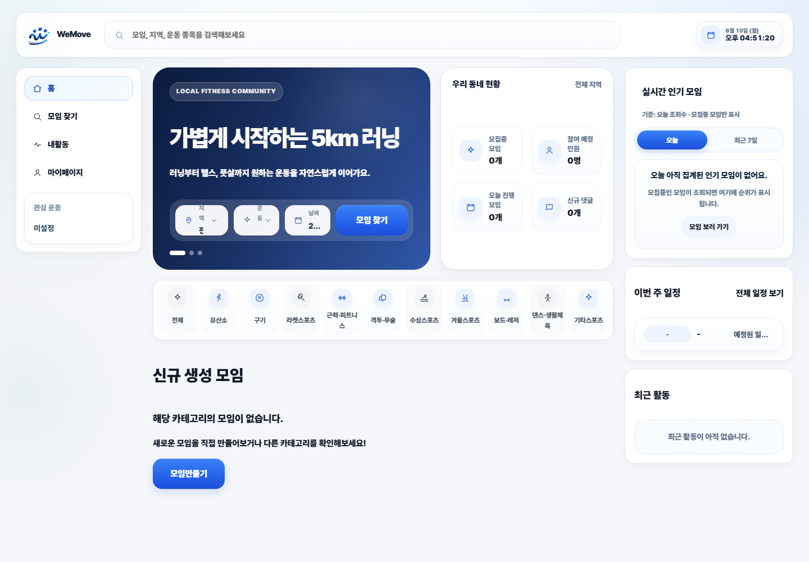
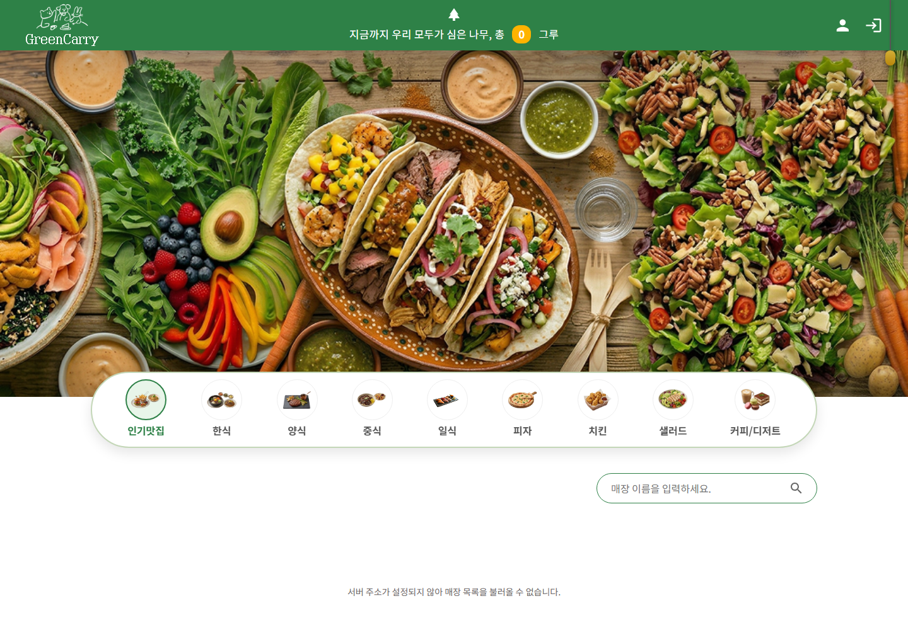
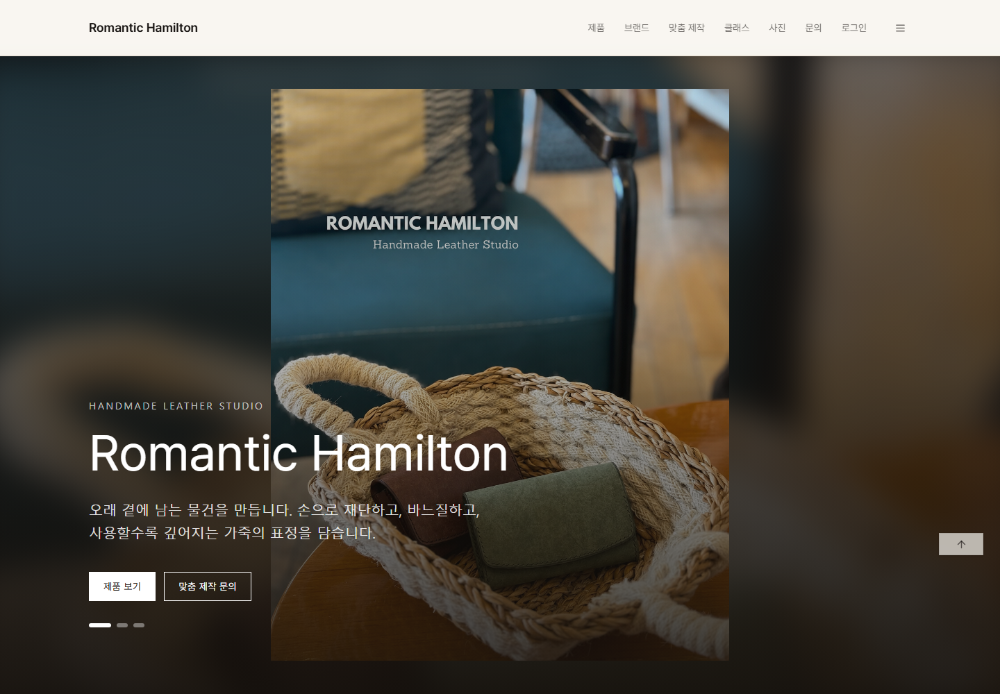

문제를 끝까지 추적하는 끈기
로그, 실행 흐름, 데이터 상태를 차근차근 확인하며 원인을 좁혀갑니다.
서버 로직과 데이터 흐름을 이해하는 백엔드 개발자로 성장하고 있습니다. 기능 구현뿐 아니라 예외 처리, 쿼리 효율, 배포 환경까지 함께 고민하며 유지보수하기 쉬운 코드를 작성하려고 노력합니다.
로그, 실행 흐름, 데이터 상태를 차근차근 확인하며 원인을 좁혀갑니다.
HTTP, SQL, Java 문법, Spring 구조처럼 기반이 되는 내용을 꾸준히 복습합니다.
작업 내용을 명확히 공유하고, 피드백을 다음 코드 개선으로 연결하려고 노력합니다.
진행한 프로젝트에서 실제로 사용한 기술을 기준으로 정리했습니다.
핵심 기술
Java와 Spring Boot를 중심으로 API, 인증, 알림, 채팅 흐름을 구현했습니다.


